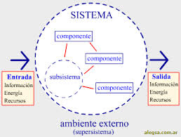

Un elemento se refiere a cualquier parte o componente que forma parte de un sistema y contribuye a su funcionamiento. Los elementos pueden ser físicos, como componentes mecánicos o electrónicos, o conceptuales, como reglas, procedimientos o lógica de
software.
En un sistema dado, los elementos trabajan juntos de manera coordinada para lograr los objetivos del sistema en su totalidad. Cada elemento puede tener interacciones y relaciones específicas con otros elementos dentro del sistema, lo que ayuda a mantener
la integridad y funcionalidad del sistema en su conjunto.
Cuales son los elementos de un sistema?
Los elementos de un sistema pueden variar dependiendo del tipo de sistema del que estemos hablando. Sin embargo, de manera general, los elementos comunes que se pueden encontrar en la mayoría de los sistemas incluyen:1. Entradas: Son los datos, energía o materiales que ingresan al sistema para su procesamiento.2. Procesos: Son las actividades o transformaciones que ocurren dentro del sistema para convertir las entradas en salidas.3. Salidas: Son los resultados, productos o servicios generados por el sistema después de procesar las entradas.4. Retroalimentación (Feedback): Es la información que regresa al sistema después de que se han generado las salidas, permitiendo al sistema ajustar su funcionamiento en base a esta retroalimentación.5. Entorno: Es el contexto externo en el que opera el sistema y que puede afectar su funcionamiento y desempeño.6. Interconexiones: Son las relaciones, conexiones y comunicaciones entre los diferentes elementos del sistema que permiten que trabajen de manera conjunta y coordinada.
Porque un sistema debe tener elementos
Un sistema debe tener elementos para poder llevar a cabo sus funciones y cumplir con sus objetivos de manera efectiva. Cada elemento dentro de un sistema cumple una función específica y contribuye de forma individual al funcionamiento global del sistema.
Al integrar diferentes elementos dentro de un sistema, se logra una interacción y coordinación entre ellos que permite alcanzar resultados deseados.Algunas razones por las cuales un sistema debe tener elementos son:1. Interdependencia: Los elementos de un sistema suelen estar interconectados y dependen unos de otros para operar de manera eficiente. Cada elemento contribuye a la función general del sistema.2. Especialización: Cada elemento puede estar diseñado para desempeñar una función específica dentro del sistema, lo que contribuye a la eficacia y eficiencia en el cumplimiento de tareas.3. Sinergia: La combinación de diferentes elementos en un sistema puede generar un efecto sinérgico, donde el resultado final es mayor que la suma de las partes individuales.4. Flexibilidad y adaptabilidad: Al tener diferentes elementos, un sistema puede ser más flexible y adaptable a cambios en el entorno o en las condiciones de operación.5. Complejidad: Al integrar múltiples elementos, un sistema puede manejar mejor la complejidad de las tareas que debe realizar y responder de manera efectiva a situaciones variadas.
Ejemplo de Sistema
Un ejemplo común de un sistema es el sistema de transporte público en una ciudad. Este sistema está compuesto por diversos elementos que trabajan juntos para garantizar que las personas puedan moverse de un lugar a otro de manera eficiente y segura.
Aquí te presento algunos de los elementos que conforman el sistema de transporte público:1. Autobuses y trenes: Estos vehículos son los encargados de transportar a las personas de un punto a otro dentro de la ciudad. Cada uno de estos medios de transporte cumple una función específica dentro del sistema.2. Estaciones y paradas: Son los puntos donde las personas pueden abordar y descender de los autobuses y trenes. Estas estaciones están distribuidas estratégicamente en diferentes zonas de la ciudad para facilitar el acceso al transporte público.3. Horarios y rutas: El sistema de transporte público cuenta con horarios establecidos y rutas definidas que permiten a los usuarios planificar sus viajes y saber cuándo y por dónde pasarán los autobuses y trenes.4. Personal de operación: Conductores, operadores de estaciones y personal de mantenimiento forman parte del sistema y contribuyen a su funcionamiento diario.5. Tecnología y sistemas de información: Se utilizan sistemas de seguimiento de vehículos, aplicaciones móviles y paneles informativos en las estaciones para proporcionar a los usuarios información en tiempo real sobre el estado y ubicación de los
servicios de transporte público.

Referencias
Aqui es donde sacamos la informacion recopilada en nuestra pagina